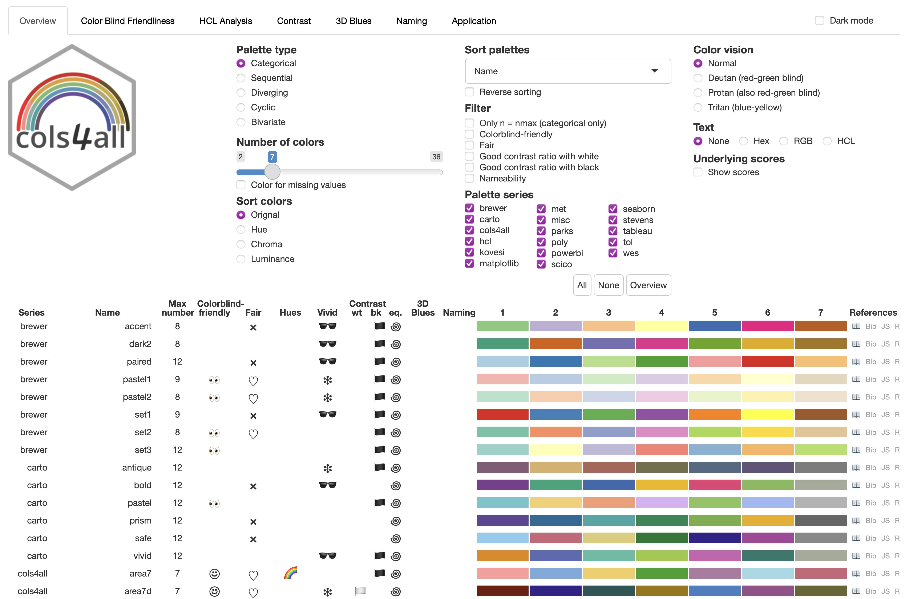
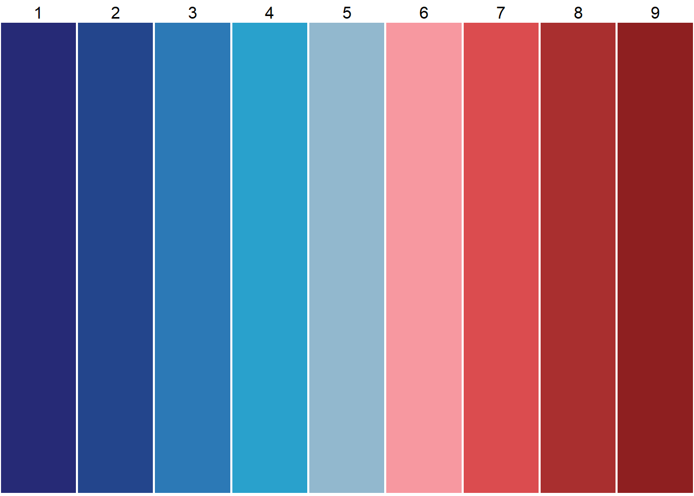
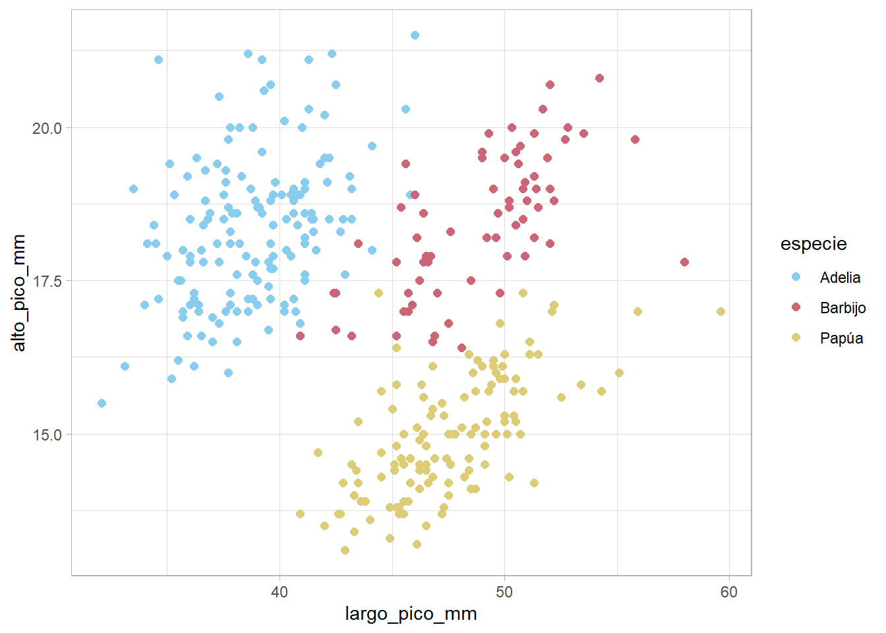
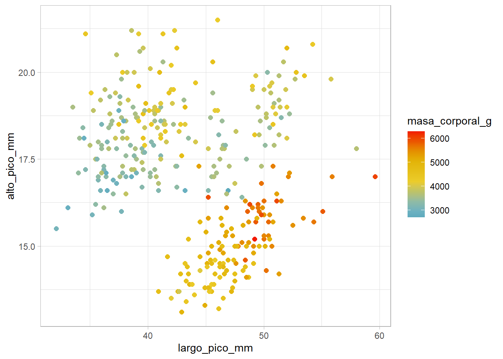

install.packages("cols4all", dependencies = TRUE)Introducción
Existen múltiples paquetes dentro del universo de R diseñados para trabajar con colores y paletas en gráficos. Sin embargo, cols4all (Colors for All) es, sin duda, uno de los más completos e interesantes de los últimos años.
Destaca por varias razones:
Mantiene paletas bien organizadas y coherentes.
Permite incorporar series de paletas personalizadas de forma sencilla.
Incluye un análisis riguroso sobre la accesibilidad del color para personas con deficiencias en la visión cromática (daltonismo).
Actualmente está disponible en CRAN y puedes instalarlo ejecutando:
Entre sus dependencias se encuentran colorblindcheck (para evaluar la accesibilidad visual), ggplot2 (para integrarse de forma nativa con el tidyverse) y shiny, que sirve de base para su interfaz interactiva.
Una vez instalado, lo activamos en nuestra sesión:
library(cols4all)Exploración interactiva
La herramienta principal es un panel de control interactivo realizado como una ventana shiny que RStudio muestra en html, que se inicia con:
c4a_gui()
Este panel cuenta con múltiples botones y filtros para explorar paletas categóricas, divergentes, secuenciales, cíclicas y bivariadas. Además, permite simular la compatibilidad con diferentes tipos de daltonismo (como Deuteranopía, Protanopía y Tritanopía).Exploración por código
Si prefieres trabajar desde la consola o script:
c4a_table(): Genera una tabla en el visor de RStudio con las paletas y sus métricas de color.c4a_series(): Muestra las series (familias) de paletas disponibles (actualmente más de 20).c4a_palettes(): Lista el catálogo completo de paletas incluidas (689 paletas disponibles).
Para visualizar los colores de una paleta específica directamente en la ventana de gráficos, usamos c4a_plot():
c4a_plot("powerbi.temperature", nrows = 1)
Si queremos extraer los códigos hexadecimales en forma de vector, utilizamos c4a():
c4a(palette = "powerbi.temperature")[1] "#262A76" "#23458C" "#2C79B6" "#29A1CC" "#92B8CE" "#F798A0" "#DB4C4F"
[8] "#A92F2F" "#8E1F20"Esto nos devolverá el vector de colores hexadecimales. (Tip: En RStudio, si pegas estos códigos entre comillas dentro de tu script, verás una vista previa del color de fondo directamente en el editor).
Para obtener los metadatos completos y evaluar la accesibilidad de una paleta específica, podemos usar c4a_info():
c4a_info(palette = "powerbi.temperature")$name
[1] "temperature"
$series
[1] "powerbi"
$fullname
[1] "powerbi.temperature"
$type
[1] "div"
$palette
[1] "#262A76" "#234990" "#2F8AC3" "#26B0D2" "#FFC1CB" "#EB5559" "#AD3232"
[8] "#8E1F20"
attr(,"range_matrix")
[,1] [,2]
[1,] 0 0.00
[2,] 0 0.75
[3,] 0 0.75
[4,] 0 0.80
[5,] 0 0.85
[6,] 0 0.90
[7,] 0 0.95
[8,] 0 1.00
attr(,"space")
[1] "rgb"
$na
[1] "#FFFFFF"
$nmin
[1] 1
$nmax
[1] Inf
$ndef
[1] 9
$mmin
[1] 1
$mmax
[1] 1
$mdef
[1] 1
$cit
[1] "Microsoft Corporation (2024). \"Use report themes in Power BI Desktop.\"\n<https://learn.microsoft.com/en-us/power-bi/create-reports/desktop-report-themes>.\nAccessed 2024-09-25."
$bib
[1] "@Misc{powerbi,\n title = {Use report themes in Power BI Desktop},\n author = {{Microsoft Corporation}},\n year = {2024},\n howpublished = {\\url{https://learn.microsoft.com/en-us/power-bi/create-reports/desktop-report-themes}},\n note = {Accessed 2024-09-25},\n}"
$reverse
[1] FALSE FALSE
$diag_flip
[1] FALSE
attr(,"class")
[1] "c4a_info" "list" E incluso podemos consultar e imprimir la cita bibliográfica de una serie en formato BibTeX con c4a_citation():
c4a_citation(name = "powerbi")
To cite palettes from series "powerbi" in publications use:
Microsoft Corporation (2024). "Use report themes in Power BI Desktop."
<https://learn.microsoft.com/en-us/power-bi/create-reports/desktop-report-themes>.
Accessed 2024-09-25.
@Misc{powerbi,
title = {Use report themes in Power BI Desktop},
author = {{Microsoft Corporation}},
year = {2024},
howpublished = {\url{https://learn.microsoft.com/en-us/power-bi/create-reports/desktop-report-themes}},
note = {Accessed 2024-09-25},
}Creación de paletas personalizadas
Podemos registrar nuestras propias paletas mediante la funciónc4a_data(), especificando sus argumentos principales:
x: una lista nombrada con las paletas y y sus respectivos vectores de colores.types: para indicar el tipo de paleta (“cat” para categórica, “seq” para secuencial, “div” para divergente, etc.).series: el nombre de la nueva serie personalizada a la que pertenecerá.
Por ejemplo, creemos la serie “mis_paletas” con una paleta categórica llamada “mi_atardecer” de 4 colores:
datos_paleta <- c4a_data(
x = list(mi_atardecer = c("#2b5c8f", "#d95f02", "#e6ab02", "#7570b3")),
type = "cat",
series = "mis_paletas")A continuación, cargamos la paleta en la sesión activa de R (memoria RAM):
c4a_load(datos_paleta)Y ya podemos invocarla utilizando la sintaxis serie.nombre:
c4a("mis_paletas.mi_atardecer")[1] "#2B5C8F" "#D95F02" "#E6AB02" "#7570B3"
NoteNota sobre persistencia
Para no perder tus paletas al cerrar R, puedes exportar tu base de datos personalizada con c4a_sysdata_export() e importarla en cualquier sesión futura con c4a_sysdata_import().
Integración con ggplot2
cols4all incluye una familia de funciones de escala diseñadas para integrarse sin fricciones como capas de color o relleno en ggplot2.
Su nomenclatura sigue la convención habitual de ggplot2: scale_<color/fill>_<discrete/continuous/binned>_c4a_<tipo_paleta>()
Ejemplo 1: Escala categórica (discreta)
library(tidyverse)
library(datos)
pinguinos |>
ggplot(aes(x = largo_pico_mm, y = alto_pico_mm, color = especie)) +
geom_point(size = 2) +
scale_color_discrete_c4a_cat("carto.safe") +
theme_light()
Aquí usamos scale_color_discrete_c4a_cat("carto.safe") para mapear una variable categórica (especie) a una escala discreta y segura para daltonismo.
Ejemplo 2: Escala continua divergente
pinguinos |>
ggplot(aes(x = largo_pico_mm, y = alto_pico_mm, color = masa_corporal_g)) +
geom_point(size = 2) +
scale_color_continuous_c4a_div("wes.zissou1", mid = mean(pinguinos$masa_corporal_g, na.rm = TRUE)) +
theme_light()Warning: Removed 2 rows containing missing values or values outside the scale range
(`geom_point()`).
En este segundo ejemplo, aplicamos scale_color_continuous_c4a_div() para mapear una variable numérica continua a la paleta divergente “wes.zissou1”, estableciendo el punto medio (mid) en la media del peso corporal de los pingüinos.
Bibliografía
Tennekes, Martijn, and Marco J. H. Puts. 2023. “cols4all: A Color Palette Analysis Tool.” EuroVis (Short Papers). https://doi.org/10.2312/evs.20231040.